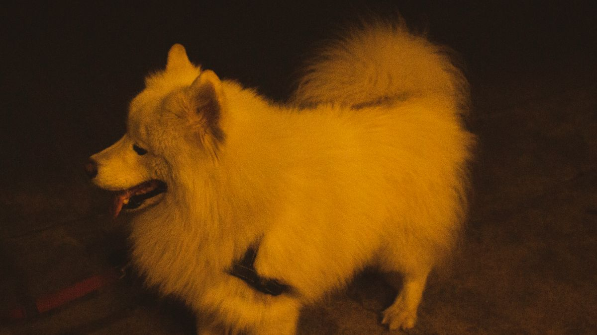
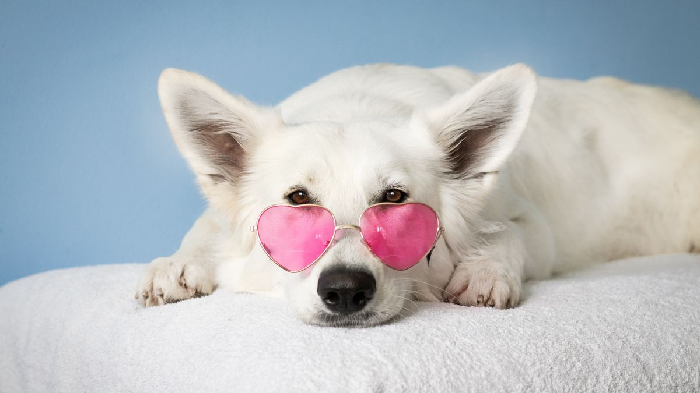
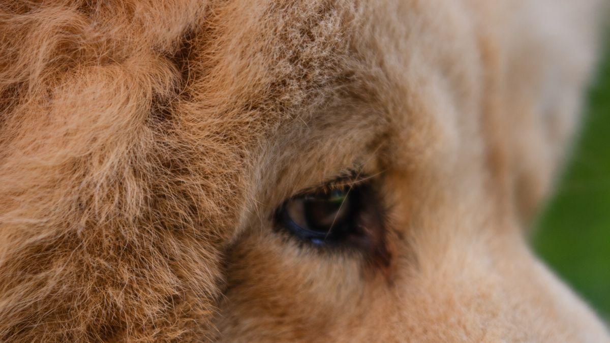
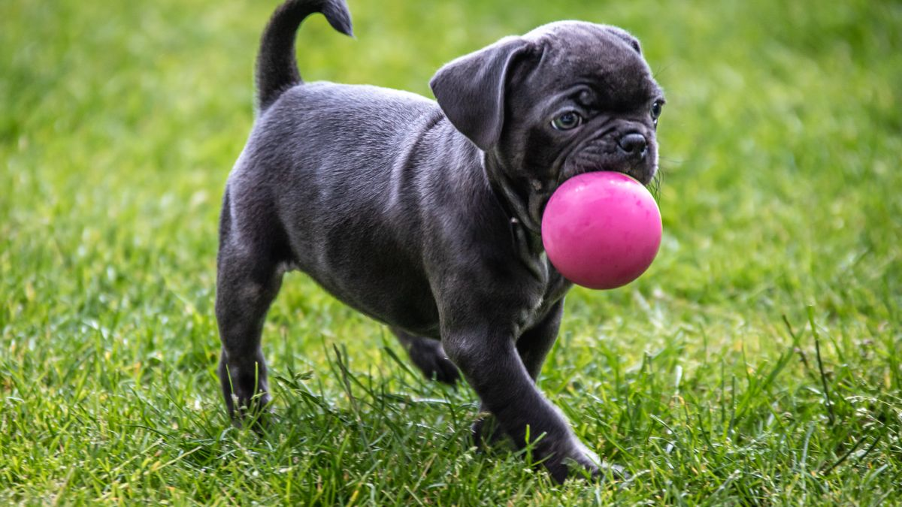
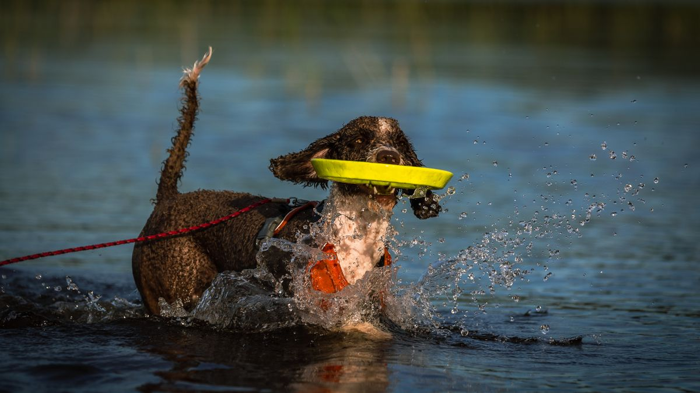
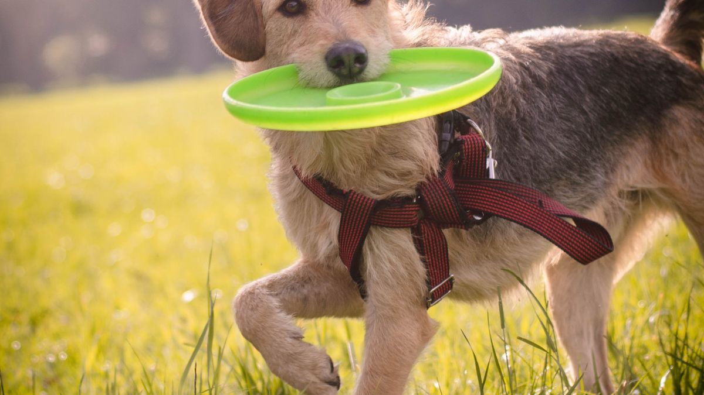
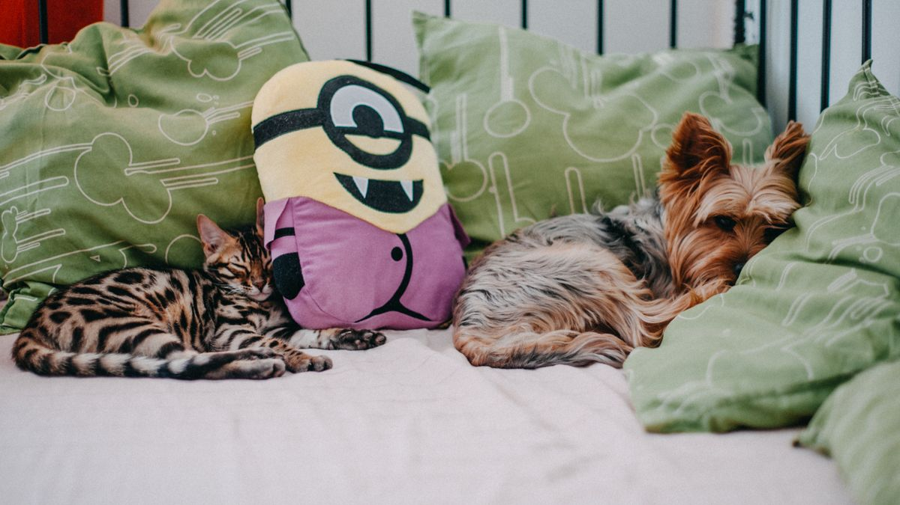

비 온 날 귀가 후 발 냄새가 심해짐
7월 장마, 평소 산책 후 2분 발 닦기만 하던 집이 있었습니다. 그날은 소나기를 맞고 귀가했고, 발·배 털을 대충 닦은 뒤 에어컨 앞에 눕혀 두었습니다. 3일 뒤 발가락 사이가 붉어지고, 귀에서 곰팡이 냄새가 났습니다. 보호자는 '목욕을 안 해서'라고 생각했지만, 메모를 보면 젖은 채로 방치된 시간이 문제였습니다.

이 글은 장마철 습기·비·발·피부 위생을 다룹니다. 산책을 갈지 말지는 날씨 산책 조절 글, 일반 산책 후 발 관리는 산책 후 발 관리 글을 먼저 보세요. 이 글은 비·습기가 이어지는 주간에 집에서 할 수 있는 건조·관찰 기준에 집중합니다.
왜 장마철에 피부·발이 먼저 반응할까
습도 70~90%가 이어지면 털·피부 표면이 쉽게 젖은 상태로 남습니다. 발가락 사이·귀 안·배·겨드랑이처럼 통풍이 약한 곳은 세균·곰팡이가 번식하기 쉬운 환경이 됩니다. 비 맞은 후 30분 이상 젖은 채로 두면, 평소 건조한 날보다 피부 자극·냄새·긁음이 빨리 나타나는 경우가 많습니다.

장모·이중모·귀가 긴 개체, 피부가 예민한 개체, 노령은 같은 비 노출에도 반응이 빠른 편입니다. 고양이는 비 산책이 거의 없지만, 창가 습기·화장실 습도·발 털은 같은 원리로 관리 대상입니다.
귀가 후 10분 건조 루틴
비·진땀·풀뜨거운 습기 이후에는 평소 2분 발 닦기를 10분 루틴으로 늘립니다. 순서를 고정하면 가족이 번갈아 해도 빠뜨리기 어렵습니다.

- 1~2분: 현관 매트에서 발가락 사이·패드 닦기(미지근한 물 또는 물티슈)
- 2~3분: 배·가슴·다리 안쪽 털이 젖었으면 수건으로 두드려 흡수(문지르지 않기)
- 2분: 귀 바깥·목덜미·꼬리 뿌리 젖은 부위 확인
- 3분: 통풍 좋은 곳에서 완전 건조 대기(에어컨 직풍·드라이어 강풍은 피함)
헤어드라이어를 쓸 때는 약풍·30cm 이상·손등으로 온도 확인 후 사용합니다. 수건 두드리기만으로 충분한 경우가 많아, 드라이어는 발·귀처럼 오래 젖는 부위에만 짧게 씁니다.
발 닦기를 싫어하면 산책 후 발 관리 글처럼 7일 터치 훈련을 병행하되, 장마 주간에는 최소한 발가락 사이 30초는 유지하세요.
귀·배 털·발 털, 장마철 추가 점검
비 맞은 날은 귀·배 털을 평소보다 자주 봅니다. 귀는 겉 귀만 닦고, 면봉을 깊이 넣지 않습니다. 분비물·냄새·머리 흔들기가 2일 이상이면 스스로 세정하지 말고 검진을 검토하세요.

배·가슴 털이 길면 흙·물이 피부에 닿는 시간이 길어집니다. 미용실 방문 전이라면, 집에서 배 털만 가위로 1~2cm 정리하는 집도 있습니다. 발 털이 길면 진흙·물이 발가락 사이에 끼기 쉬워, 장마 주간에만 짧게 정리하는 방법도 있습니다.
빗질·귀·발톱 기본 순서는 기본 그루밍 글과 같습니다. 장마철에는 빗질 빈도를 주 4~5회로 늘리고, 젖은 털을 빗지 말고 먼저 건조한 뒤 빗으세요.
실내 습도·환기·바닥 관리
장마철 실내 습도가 60%를 넘으면 침구·카펫·패드 건조가 느려지고, 냄새·곰팡이 위험이 커집니다. 하루 2회 각 10분 환기(대류 창문 양쪽 개방)를 기본으로 하고, 습도계로 50~60%를 확인하세요.

제습기·공기청정기는 환기 보조입니다. 24시간 가동만으로 습도 문제가 해결되지 않는 경우가 많아, 냄새·환기 글처럼 '환기 10분+제습 2시간' 조합이 현실적입니다.
- 침구·담요: 비 오는 날 젖었으면 그날 교체·세탁(미루지 않기)
- 바닥: 발 닦기 후에도 물기가 남으면 마른 걸레로 한 번 더
- 화장실(고양이): 모래·패드 교체 주기를 평소보다 1일 앞당기기
- 현관: 탈수실·발 닦기 매트를 두고 실내 반입 전 30초 고정
에어컨 아래·창가·욕실 근처는 습기가 모이기 쉬워, 반려동물 침대·쿠션 위치를 한시적으로 옮기는 것도 방법입니다.
집에서 볼 피부·발 이상 신호
아래 중 하나라도 3일 이상이면, 사진과 함께 검진을 검토하세요. 이 글은 진단·처방을 대체하지 않습니다.

- 발가락 사이 붉은기·냄새·끈적한 분비물
- 귀 안 냄새·검은 분비물·머리 흔들기 증가
- 배·겨드랑이·목·꼬리 뿌리 긁음·탈모·딱지
- 젖은 털 부위만 피부가 거칠어지거나 색이 변함
- 긁음 후 상처·출혈·딱지가 48시간 안 가라앉음
관찰 메모는 집에서 관찰하기 글처럼 매일 3줄이면 충분합니다. '어느 부위·언제부터·건조 전후 차이'만 적어도 상담 시 도움이 됩니다.
항생제 연고·사람 약·강한 소독제를 임의로 바르면 핥아 삼키거나 피부가 더 자극받을 수 있습니다.
장마 주간 루틴
장마철 위생은 '매일 목욕'이 아니라 젖은 시간을 줄이는 일에 가깝습니다. 이번 주는 건조 루틴 하나만 고정해 보세요.

월: 현관에 발 닦기·수건·귀 티슈 바구니를 고정합니다. 화: 산책 후 10분 건조 순서를 가족에게 한 줄 공유합니다. 수: 습도계로 실내 50~60%를 확인하고, 60% 넘으면 환기·제습을 늘립니다. 목: 비 온 날 침구·담요를 그날 교체했는지 체크합니다. 금: 귀·발가락 사이를 30초만 봅니다(냄새·붉은기). 토: 젖은 털 상태로 빗질하지 않았는지 돌아봅니다. 일: 이번 주 긁음·냄새 변화를 3줄 메모합니다.
소나기만 맞은 날은 5분 건조로 줄여도 됩니다. 장마·천둥·강풍·30분 이상 비 이후는 10분 루틴을 씁니다.
실내 전환 날에도 발·배 털에 습기가 남을 수 있습니다. 실내 놀이 후에도 배·발을 1분 확인하세요.
이번 주 장마철 위생 체크리스트입니다. 항목 3개만 골라 쓰세요.
- 비·습기 산책 후 10분 건조 루틴을 썼습니다.
- 발가락 사이·귀·배 털을 젖은 채로 두지 않았습니다.
- 실내 습도 60% 넘을 때 환기·제습을 늘렸습니다.
- 젖은 침구·담요를 그날 교체·세탁했습니다.
- 귀·발 냄새·긁음을 3일 이상 메모했습니다.
- 드라이어는 약풍·멀리, 수건 두드리기를 우선했습니다.
- 현관 발 닦기 매트로 실내 반입 전 30초를 고정했습니다.
- 이상 신호 3일 이상이면 사진과 함께 상담을 검토했습니다.
장마가 끝나도 1주일은 건조 루틴을 유지하면, 습도가 내려가는 시기 피부 반응을 덜 볼 수 있습니다.
작년 장마 때 일지 한 줄만 찾아도, 올해 우리 집 기준이 빨리 잡힙니다.
한 줄 정리
장마철 위생 실패의 대부분은 '목욕 부족'이 아니라 '젖은 채로 둔 시간'이었습니다. 오늘부터 귀가 후 10분만 고정해 보세요.
한 줄로: 비 온 뒤 10분 건조, 습도 60% 이하, 3일 이상 이상하면 메모와 상담. 이 글은 응급·진단 판단을 대체하지 않습니다.
초보자가 자주 실수하는 포인트
- 비 맞은 후 발만 대충 닦고 바로 실내 방치
- 젖은 털 상태로 빗질·드라이어 강풍 사용
- 실내 습도 60% 넘는데 환기·제습 생략
- 귀 냄새·발 붉은기를 목욕으로만 해결하려 함
- 장마 주간 침구·담요 교체 미루기
체크리스트
- 귀가 후 10분 건조 루틴
- 실내 습도 50~60% 확인
- 귀·발가락 사이 30초 점검
- 젖은 침구 당일 교체
- 3일 이상 이상 시 메모·상담
자주 묻는 질문
- paw-care-after-walk 글과 무엇이 다른가요?
- 산책 후 발 관리 글은 매일 2~3분 발·발톱 점검을 다룹니다. 이 글은 장마·비·습기가 이어지는 주간에 귀·배 털·실내 습도까지 포함한 10분 건조·관찰 기준에 집중합니다.
- 비 온 날마다 목욕해야 하나요?
- 매일 목욕은 피부 건조·스트레스를 키울 수 있습니다. 대부분은 발·배·귀 건조와 실내 습도 관리로 충분한 경우가 많습니다. 진흙·오물이 심할 때만 부분 세척을 검토하세요.
- 고양이도 같은 루틴을 쓰나요?
- 고양이는 비 산책이 거의 없지만, 창가 습기·화장실·발 털·귀는 같은 원리로 관리합니다. 빗질 전 건조, 습도 60% 이하, 귀 냄새 3일 이상 시 상담 검토가 공통입니다.
이 글은 초보자 기준으로 이해하기 쉽게 정리되었으며, 내용은 운영 과정에서 순차적으로 보완될 수 있습니다. 수의사 등 전문가의 진단·처치를 대체하지 않습니다.